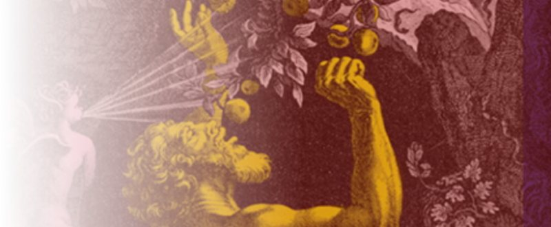
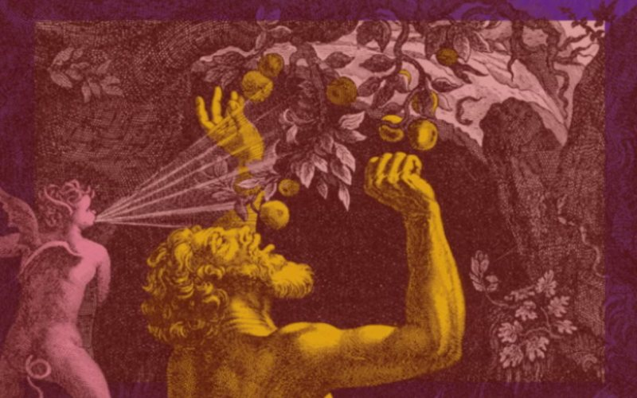

Collections of images, rare books, primary source documents, ephemera, and other content from partner institutions, shared on JSTOR.


In the sixteenth and seventeenth century, the death of a pope led to all sorts of chaos, from the destruction of art to armed violence in the streets.
No collection stories in this category yet.